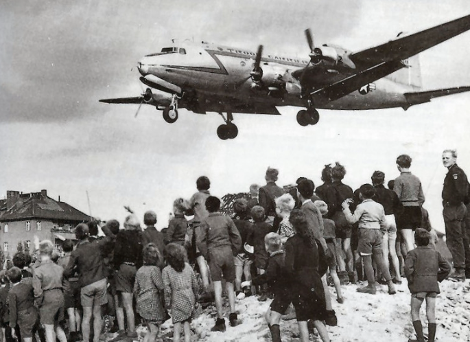
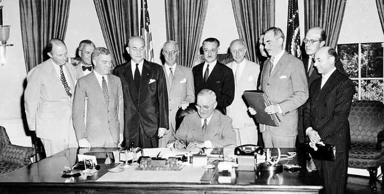
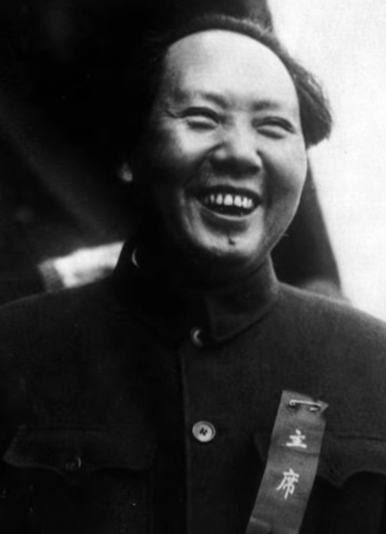

Core Objectives
- Trace the origins of the Cold War through the breakdown of agreements at Yalta and Potsdam and the descent of the "Iron Curtain."
- Analyze the philosophy of containment as articulated by George Kennan and its application in the Truman Doctrine and Marshall Plan.
- Contrast the geopolitical goals and structures of the rival military alliances, NATO and the Warsaw Pact.
Key Terms
United Nations | Satellite Nations | Containment | Iron Curtain | Cold War | Truman Doctrine | Marshall Plan | Berlin Airlift | North Atlantic Treaty Organization (NATO) | Warsaw Pact | George Kennan | Mao Zedong | Chiang Kai-shek
Introduction | The Fragile Peace and the Cold Divide
The conclusion of World War II brought a fleeting moment of global celebration, yet the shadows of a new, more enduring conflict were already lengthening across the European continent. The "marriage of convenience" between the United States and the Soviet Union quickly dissolved as their incompatible visions for the postwar world—capitalist democracy versus totalitarian communism—collided. As Joseph Stalin tightened his grip on Eastern Europe to create a strategic buffer zone, the West watched with growing alarm at the systematic erosion of self-determination. This era, defined by the "Iron Curtain" and the policy of containment, transformed former allies into bitter rivals locked in a nuclear-backed standoff. The American experiment was now forced to abandon its isolationist roots to lead a global crusade against the expansion of Soviet influence.

Postwar reconstruction was fundamentally hampered by the incompatible geopolitical visions of the United States and the Soviet Union, leading to a permanent fracture in global diplomacy.
Analysis Question:
How does the collision of these two ideologies explain why a "marriage of convenience" during wartime could not survive the peace?
The Collapse of the Wartime Alliance
The defeat of the Axis Powers in World War II brought a wave of relief and celebration across the globe, but the peace that followed was immediately fragile. The alliance that had won the war—primarily the United States, Great Britain, and the Soviet Union—was not built on shared values or mutual trust. Instead, it was a marriage of convenience forged by the necessity of defeating a common enemy: Nazi Germany. Once that enemy was destroyed, the profound ideological, economic, and political differences between the democratic, capitalist United States and the totalitarian, communist Soviet Union rushed to the forefront of global affairs. The United States envisioned a postwar world built on the principles of democratic elections, free trade, and the self-determination of nations. The Soviet Union, having suffered catastrophic losses including the deaths of over twenty million of its citizens, was driven by a deep historical insecurity and a desire to ensure that its territory would never again be invaded from the west.
The Promises of Yalta
The fracture of the grand alliance became visible even before the fighting had officially ended. In February 1945, President Franklin D. Roosevelt, British Prime Minister Winston Churchill, and Soviet Premier Joseph Stalin met at the Soviet resort town of Yalta on the Black Sea. At this conference, the three leaders attempted to map out the future of a post-Hitler Europe. Because the Soviet Red Army had already pushed German forces out of Eastern Europe and occupied nations like Poland, Romania, and Hungary, Stalin held a massive geographic advantage. He demanded that these nations serve as a permanent buffer zone to protect the Soviet Union from future western aggression. Roosevelt and Churchill, recognizing the reality of the Soviet military presence, pushed Stalin to promise that he would allow "free and unfettered elections" in Poland and the rest of Eastern Europe as soon as possible. Stalin agreed to this declaration, but his interpretation of a "friendly" neighboring government required strict communist control, which fundamentally contradicted the Western concept of democratic elections.

Prime Minister Winston Churchill, President Franklin D. Roosevelt, and Premier Joseph Stalin sit together at the Livadia Palace during the Yalta Conference in February 1945.
Why it Matters: The diplomatic agreements forged by these three leaders fundamentally shaped the postwar geopolitical landscape. The vague promises regarding democratic elections in Eastern Europe and the temporary division of Germany set the stage for immediate mistrust. The personal dynamics between capitalist and communist leaders at this conference represented the fragile and temporary nature of the wartime alliance.
The leaders at Yalta also made crucial decisions regarding Germany. They agreed to temporarily divide the defeated nation into four distinct occupation zones, to be administered by the United States, Great Britain, France, and the Soviet Union. Furthermore, the German capital of Berlin, which was located deep within the Soviet occupation zone, would also be divided into four corresponding sectors. In exchange for these agreements and the promise of future Soviet territorial concessions in Asia, Stalin pledged that the Soviet Union would enter the war against Japan within three months of Germany’s surrender. He also agreed to participate in a new international peacekeeping organization, a major goal for President Roosevelt. Despite the appearance of compromise, the agreements at Yalta were deliberately vague, papering over deep divisions with diplomatic language that each side interpreted differently.
Checkpoint
1. What did Winston Churchill and Franklin Roosevelt urge Joseph Stalin to provide for the nations of Eastern Europe during the Yalta Conference?
The Realities of Potsdam
By July 1945, the atmosphere among the Allied leaders had shifted dramatically. When the leaders met again at the Potsdam Conference near Berlin, the personnel and the global dynamic had changed. Franklin D. Roosevelt had passed away, bringing Vice President Harry S. Truman into the presidency. Truman was far less willing to accommodate the Soviet Union than his predecessor had been. Furthermore, Winston Churchill was replaced midway through the conference by the newly elected British Prime Minister, Clement Attlee. Most importantly, the United States had just successfully tested the first atomic bomb, a technological triumph that gave Truman newfound confidence in his negotiations.

Prime Minister Clement Attlee, President Harry S. Truman, and Premier Joseph Stalin pose at the Potsdam Conference in July 1945.
Why it Matters: The change in leadership from Roosevelt to Truman significantly altered the diplomatic approach of the United States toward the Soviet Union. Truman's less accommodating stance, bolstered by the successful test of the atomic bomb, clashed directly with Stalin's refusal to permit democratic elections in Eastern Europe. The resulting failure to reach a cooperative consensus regarding the administration of Germany cemented the postwar divide.
Spotlight Question:
How did the diplomatic strategy of Harry S. Truman at the Potsdam Conference differ from the approach taken by Franklin D. Roosevelt at the earlier Yalta Conference?
At Potsdam, it became undeniable that Stalin had no intention of honoring his earlier promises regarding Eastern Europe. The Red Army remained firmly entrenched in Poland and the surrounding nations, and Stalin flatly refused to allow democratic elections, arguing that any freely elected government in Eastern Europe would inevitably be anti-Soviet. Truman recognized that the Soviet Union was systematically establishing a sphere of influence through military intimidation. The conference also finalized the specific details of Germany's division and the collection of war reparations, with each occupying power permitted to extract reparations only from its own designated zone. This decision effectively divided Europe’s industrial heartland, as the western allies quickly realized that a permanently impoverished Germany would destabilize the entire European economy. The deep mistrust at Potsdam signaled the definitive end of wartime cooperation and the beginning of a bitter global rivalry.
Checkpoint
1. How did Harry S. Truman’s approach to the Soviet Union differ from that of Franklin D. Roosevelt?
The Descent of the Iron Curtain
As the physical reconstruction of Europe began, a new political architecture took shape. The hope that international cooperation would replace the destructive national rivalries of the past quickly faded. The institutions designed to prevent future wars instead became the primary arenas where the growing hostility between the superpowers was fought out through diplomacy and proxy conflicts.
Postwar Hopes and the United Nations
In April 1945, representatives from fifty nations gathered in San Francisco to draft the charter for the United Nations, an international organization intended to promote peace, security, and economic development. Officially established in October of that year, the United Nations was designed to succeed where the pre-war League of Nations had failed. Unlike the League, the United States was a founding and enthusiastic member of the United Nations. The structure of the organization included a General Assembly, where all member nations cast votes on global issues, and an exclusive Security Council, which held the real power to authorize military and economic interventions.

President Harry S. Truman addresses the United Nations Conference on International Organization in San Francisco in June 1945.
Why it Matters: The establishment of the United Nations represented a global effort to replace destructive national rivalries with diplomatic cooperation and international security. The active participation of the United States marked a definitive rejection of pre-war isolationism in favor of global leadership. However, the absolute veto power granted to the permanent members of the Security Council frequently paralyzed the institution during Cold War disputes.
Spotlight Question:
How did the structural design of the United Nations Security Council reflect the global balance of power immediately following World War II?
The Security Council was dominated by five permanent members: the United States, the Soviet Union, Great Britain, France, and China. Crucially, each permanent member held absolute veto power over any Security Council resolution. While this structure was intended to force consensus among the major powers, it effectively paralyzed the organization when the United States and the Soviet Union found themselves on opposing sides of nearly every global issue. Rather than serving as an impartial mediator, the United Nations frequently became a high-profile forum where American and Soviet diplomats engaged in bitter rhetorical battles, attempting to win the favor of the global community while vetoing each other's strategic initiatives.
Checkpoint
1. Why did the United Nations Security Council often fail to take action during the early years of the Cold War?
The Rise of Satellite Nations
While American diplomats argued in the United Nations, Soviet forces were busy reshaping the political landscape of Eastern Europe. Stalin justified his aggressive policies by pointing to the devastating invasions Russia had suffered from the west over the preceding centuries. To prevent a recurrence, he sought to create a vast protective barrier of friendly communist states. Using the presence of the Red Army as leverage, the Soviet Union orchestrated the installation of loyal communist governments in Albania, Bulgaria, Czechoslovakia, Hungary, Romania, and Poland.

Romanian communist leaders greet the arrival of the Soviet Red Army in Bucharest during the latter stages of World War II.
Why it Matters: The overwhelming military presence of the Red Army at the conclusion of the war provided the coercive leverage necessary for Joseph Stalin to install loyal communist governments across Eastern Europe. The creation of a protective barrier of satellite nations stripped millions of citizens of their political independence and economic freedom. This aggressive expansion of totalitarian control directly violated the principle of self-determination advocated by the United States.
Spotlight Question:
What was the primary strategic motivation behind Joseph Stalin's decision to establish a bloc of communist-controlled satellite nations across Eastern Europe?
These countries became known as Satellite Nations, politically and economically dominated by the Soviet Union. In these nations, opposing political parties were outlawed, independent newspapers were shut down, and political dissidents were frequently imprisoned or executed. The Soviet Union controlled their economies, directing their agricultural and industrial output to serve the needs of the Russian mainland rather than their own populations. For the United States, the creation of this Soviet empire violated the fundamental principles of self-determination and represented a terrifying expansion of totalitarianism that mirrored the aggressive conquests of Nazi Germany only a few years prior.
Checkpoint
1. Which of the following best describes the status of "Satellite Nations" in Eastern Europe?
Winston Churchill's Warning
The physical and ideological division of the continent was famously articulated in March 1946 by Winston Churchill, who was no longer the British Prime Minister but remained a towering figure in global politics. Speaking at a college in Fulton, Missouri, with President Truman in the audience, Churchill warned the American public of the growing Soviet threat. He declared that "from Stettin in the Baltic to Trieste in the Adriatic, an Iron Curtain has descended across the Continent."

Former British Prime Minister Winston Churchill, whose 1946 address popularized the concept of an ideological barrier across Europe.
Why it Matters: The articulation of the "Iron Curtain" metaphor provided the western public with a stark, comprehensible framework for understanding the new global reality. The speech successfully framed the geopolitical standoff not merely as a territorial dispute, but as an existential clash between democratic freedom and authoritarian tyranny. The public warning galvanized American political leaders to formally address the expansionist threat of the Soviet Union.
Spotlight Question:
In what ways did the metaphor of the "Iron Curtain" shape the American public's understanding of the ideological and physical divisions in postwar Europe?
This phrase instantly became the defining metaphor for the postwar era. The Iron Curtain represented the heavily fortified border that separated the democratic, capitalist nations of Western Europe from the communist, authoritarian states of Eastern Europe. Behind this metaphorical and increasingly physical barrier of barbed wire, minefields, and border guards, the Soviet Union tightened its grip. Churchill’s speech served as a wake-up call to the American public, framing the geopolitical struggle not just as a territorial dispute, but as a fundamental clash between freedom and tyranny. This ideological standoff, which would last for more than four decades without escalating into direct, large-scale military conflict between the two superpowers, became known as the Cold War.
Checkpoint
1. What did the "Iron Curtain" symbolize in Winston Churchill's 1946 speech?
The Philosophy and Practice of Containment
Faced with the relentless expansion of Soviet influence, the United States government urgently needed a coherent foreign policy. The traditional American impulse to return to isolationism after a major war was no longer viable in a world where the balance of power had been utterly destroyed. The resulting strategy would guide American foreign policy for the rest of the twentieth century, committing the United States to a permanent, global engagement against communist expansion.
George Kennan and the Long Telegram
The intellectual foundation for America's new approach was provided by George Kennan, an American diplomat stationed at the United States embassy in Moscow. In February 1946, Kennan sent an extensively detailed, 8,000-word message back to the State Department that became famous as the "Long Telegram." Kennan analyzed the psychological and historical roots of Soviet behavior, explaining that Russian leaders were driven by a traditional, deeply ingrained sense of insecurity regarding their borders, combined with the fanatical Marxist ideology that viewed capitalist nations as inherently hostile and ultimately doomed to collapse.

American diplomat George F. Kennan, whose analytical writings from Moscow formed the intellectual foundation of the containment strategy.
Why it Matters: The detailed psychological and historical analysis provided by George Kennan shifted American foreign policy away from direct military confrontation and toward long-term strategic vigilance. The philosophy of containment provided a coherent roadmap for resisting Soviet expansion without immediately triggering another global war. The assertion that the Soviet system would eventually collapse under its own internal flaws offered a foundational sense of optimism to the decades-long Cold War struggle.
Kennan argued that Stalin would relentlessly attempt to expand Soviet power and probe for weaknesses in the non-communist world. However, Kennan also observed that the Soviet leadership was highly cautious and would back down if they encountered strong, unyielding resistance. Therefore, Kennan proposed a policy of Containment, defined as the patient, long-term, and vigilant containment of Russian expansive tendencies. The goal was not to launch a military invasion to destroy the Soviet Union, but to actively prevent the spread of communism to any new territories. Kennan believed that if the Soviet system could be successfully contained and prevented from expanding, its internal economic and political flaws would eventually cause it to collapse under its own weight.
Checkpoint
1. What was the primary objective of the policy of "containment"?
The Truman Doctrine
The philosophy of containment faced its first major test in early 1947. In Greece, a communist-led insurgency was waging a civil war against the traditional monarchy, while in neighboring Turkey, the Soviet Union was applying intense diplomatic pressure to gain control over the Dardanelles, a vital waterway linking the Black Sea to the Mediterranean. Historically, Great Britain had provided financial and military support to keep these regions out of Russian hands. However, the British economy was shattered by the war, and the British government informed the United States that it could no longer afford to support Greece and Turkey.

President Harry S. Truman addresses a joint session of Congress to request military and economic aid for Greece and Turkey in March 1947.
Why it Matters: The presidential request for intervention established a massive precedent that transformed the United States into a proactive global policeman against communist expansion. The financial and military support successfully neutralized the insurgencies in Greece and stabilized the Mediterranean region. The formal articulation of the doctrine committed the American government to defending "free peoples" anywhere in the world, permanently ending the nation's tradition of peacetime isolationism.
Spotlight Question:
How did the severe economic weakness of Great Britain immediately following World War II compel the United States to articulate and enforce the Truman Doctrine?
President Truman realized that if the United States did not step in, both nations would likely fall to communism, potentially destabilizing the entire Middle East. In March 1947, Truman addressed a joint session of Congress to request $400 million in economic and military aid for Greece and Turkey. In his speech, he articulated what became known as the Truman Doctrine, boldly stating that "it must be the policy of the United States to support free peoples who are resisting attempted subjugation by armed minorities or by outside pressures." Congress approved the funds, and the intervention was successful; communist forces were defeated in Greece, and Turkey maintained its control over the straits. More importantly, the Truman Doctrine established a massive precedent, effectively declaring that the United States would act as a global policeman to actively resist the spread of communism anywhere in the world.
Checkpoint
1. What specific crisis prompted the announcement of the Truman Doctrine?
Rebuilding Europe Through the Marshall Plan
While military aid could stop armed insurgents, American policymakers realized that the greatest threat of communist expansion in Western Europe came from profound economic desperation. The winter of 1946–1947 was the harshest in recorded memory, exacerbating the misery of populations living in ruined cities without adequate food, fuel, or shelter. In nations like France and Italy, millions of starving and unemployed citizens were increasingly voting for local communist parties, drawn to promises of radical economic restructuring.

An official poster promoting the economic cooperation and mutual recovery efforts of the European Recovery Program.
Why it Matters: The massive infusion of American capital effectively revived the devastated industrial and agricultural sectors of Western Europe. The rapid stabilization of local economies directly undermined the political appeal of radical communist parties in vulnerable nations like France and Italy. The economic recovery program simultaneously established robust, modernized trading partners that fueled the postwar economic boom within the United States.
Spotlight Question:
Why did American policymakers believe that comprehensive economic assistance was a more effective weapon against communist expansion in Western Europe than direct military intervention?
To address this crisis and fortify the capitalist democracies of Western Europe, Secretary of State George Marshall proposed a massive program of economic assistance in June 1947. The Marshall Plan offered billions of dollars in American financial aid to any European nation willing to cooperate in a mutual recovery program. The offer was technically extended to the Soviet Union and its satellite nations, but Stalin adamantly refused, forbidding Eastern European countries from participating and denouncing the plan as an American plot to buy control of Europe. Over the next four years, the United States directed approximately $13 billion to sixteen Western European countries. The results were spectacular. The infusion of capital rebuilt shattered infrastructure, modernized factories, and stabilized currencies. By reviving the economies of Western Europe, the Marshall Plan not only eliminated the conditions that fostered communist political victories, but it also created robust, wealthy trading partners for the American economy.
Checkpoint
1. What was the primary economic goal of the Marshall Plan?
The Division of Germany and Global Alliances
As the United States solidified its containment strategy through economic aid and political doctrines, the physical division of Europe became an entrenched reality. Germany, the geographic and political center of the continent, became the ultimate flashpoint of the early Cold War, leading directly to a permanent militarization of the conflict.
The Blockade and the Berlin Airlift
At the end of World War II, Germany had been divided into four occupation zones. By 1948, the United States, Great Britain, and France concluded that Europe could not truly recover without a revitalized German economy. They decided to combine their three western zones into a single, unified West German state and introduced a new, stable currency, the Deutsche Mark. Stalin was furious at this consolidation, fearing a revitalized and unified capitalist Germany on his border.

A United States Navy transport plane flies low over the ruins of Berlin while citizens watch from the ground during the airlift of 1948.
Why it Matters: The logistical triumph of supplying a blockaded city entirely from the air demonstrated the immense technological and industrial capacity of the western allies. The successful defense of West Berlin served as a monumental public relations victory, proving that the United States would strictly enforce the containment policy without instigating armed conflict. The failure of the Soviet blockade firmly cemented the permanent physical and political division of Germany.
Spotlight Question:
What does the massive logistical commitment required by the Berlin Airlift reveal about the strategic importance of West Germany to the American policy of containment?
In June 1948, Stalin retaliated by exploiting the vulnerability of Berlin. Although the city of Berlin was located roughly 100 miles deep inside the Soviet occupation zone, it too had been divided into four sectors. To force the western allies to abandon their plans for West Germany, Stalin ordered a total blockade of West Berlin, cutting off all highway, railway, and canal traffic from western Germany into the city. Over two million residents of West Berlin were suddenly trapped, with only enough food and fuel to survive for a few weeks.
President Truman faced a terrible dilemma. Retreating from Berlin would signal weakness and undermine the entire policy of containment. Attempting to force an armed convoy through the Soviet blockade could easily trigger World War III. Instead, American and British forces launched the Berlin Airlift. For 327 consecutive days, cargo planes flew around the clock, taking off and landing every few minutes at West Berlin airports. They delivered millions of tons of essential supplies, including food, medicine, and coal. The logistical triumph of the airlift frustrated the Soviet siege, and by May 1949, Stalin recognized that the blockade had failed and lifted the restrictions. The airlift was a massive psychological and public relations victory for the United States, proving its commitment to defending its allies without firing a single shot.
Checkpoint
1. What action by the Western Allies prompted Joseph Stalin to initiate the Berlin Blockade?
NATO and the Warsaw Pact
The aggressive nature of the Berlin Blockade convinced the nations of Western Europe that economic assistance was not enough; they required a formal guarantee of military defense against potential Soviet aggression. In April 1949, the United States, Canada, and ten Western European nations formed the North Atlantic Treaty Organization (NATO). The members of this defensive military alliance pledged that an armed attack against any one of them would be considered an attack against them all.

President Harry S. Truman signs the document ratifying the North Atlantic Treaty in Washington, D.C., in 1949.
Why it Matters: The formation of a permanent peacetime military alliance fundamentally reversed the traditional American diplomatic reluctance to engage in binding international defense treaties. The presence of permanently stationed American troops in Western Europe provided a credible nuclear deterrent against Soviet territorial ambitions. The subsequent creation of the Warsaw Pact transformed the ideological division of Europe into a formalized, heavily armed military standoff.
The creation of NATO represented a profound and historic shift in American foreign policy. For the first time in its history, the United States had entered into a permanent peacetime military alliance, explicitly rejecting the tradition of isolationism that had guided the nation since George Washington’s farewell address. Congress authorized the deployment of American troops to be permanently stationed in Western Europe, signaling to the Soviet Union that the continent was strictly off-limits to further expansion.
The Soviet Union viewed NATO as a direct and aggressive threat. When West Germany was permitted to rearm and officially join NATO in 1955, the Soviet Union responded by formalizing its own military alliance system. The Warsaw Pact bound the Soviet Union and its Eastern European satellite nations—including Poland, East Germany, Czechoslovakia, Hungary, Romania, Bulgaria, and Albania—into a unified military command structure controlled entirely from Moscow. With the formation of these two massive, heavily armed rival alliances, the Iron Curtain was no longer just a political boundary; it was the frontline of a militarized standoff between two hostile global camps.
Checkpoint
1. What was the core principle of the North Atlantic Treaty Organization (NATO)?
The Cold War Expands to Asia
While American policymakers were heavily focused on stabilizing and defending Western Europe, the strategy of containment faced a catastrophic setback on the opposite side of the globe. The ideological struggle of the Cold War was not confined to Europe; it quickly expanded into a massive civil war in Asia that altered the balance of global power.
The Fall of Nationalist China
For two decades, a brutal civil war had raged in China between the Nationalist government, led by Chiang Kai-shek, and the Communist insurgency, led by Mao Zedong. During World War II, the two factions temporarily halted their conflict to fight together against the invading Japanese forces. The United States heavily supported Chiang Kai-shek, providing his Nationalist government with billions of dollars in military and financial aid during the war and in the years immediately following.

Communist leader Mao Zedong, who established the People's Republic of China following the defeat of Nationalist forces in 1949.
Why it Matters: The communist victory in the Chinese Civil War drastically shifted the global balance of power and expanded the Cold War from a European conflict into an Asian one. The defeat of the American-backed Nationalist government caused profound political panic in the United States regarding the efficacy of the containment strategy. The establishment of a massive new communist state directly contributed to the subsequent militarization of American foreign policy in Asia.
Spotlight Question:
How did the contrasting leadership styles and public policies of Mao Zedong and Chiang Kai-shek contribute to the ultimate victory of communist forces in the Chinese Civil War?
Despite this massive American support, Chiang’s government was plagued by inefficiency, severe economic inflation, and profound corruption. The Nationalist leaders hoarded supplies and alienated the peasant population with oppressive taxation and brutal conscription tactics. In contrast, Mao Zedong and his communist forces cultivated deep support among the rural peasantry. By distributing land to poor farmers and enforcing strict discipline and fair treatment among his guerrilla soldiers, Mao built a massive, highly motivated communist army.
When the Japanese surrendered in 1945, the Chinese Civil War resumed with intense ferocity. Despite superior American weaponry, the Nationalist forces suffered from terrible morale and incompetent leadership. Entire divisions of Chiang's army defected to the communists, taking their American-supplied weapons with them. By 1949, Mao’s forces had completely overwhelmed the Nationalists. Chiang Kai-shek and the remnants of his government fled the Chinese mainland to the island of Taiwan, where they established a government in exile.
In October 1949, Mao Zedong stood in Beijing and officially proclaimed the establishment of the People's Republic of China, a massive new communist state. The American public was profoundly shocked. The most populous nation on earth had fallen to communism, creating panic that the policy of containment had fundamentally failed. The "loss of China" fueled intense political debates in Washington, with critics arguing that the United States government had not done enough to support its allies in Asia, a fear that would soon draw the American military into direct armed conflict on the Korean peninsula.
Checkpoint
1. Why did many Chinese peasants support Mao Zedong's communist forces over the Nationalist government?
🗺️ Mapping History | The Iron Curtain
A Divided Europe (1945–1955)
Location and Landscape
Following World War II, the map of Europe was radically redrawn. The continent was cleaved down the middle by the "Iron Curtain," an ideological and physical boundary running from the Baltic Sea in the north to the Adriatic Sea in the south. To the west lay the democratic, capitalist nations that eventually formed the NATO alliance, including Great Britain, France, Italy, and West Germany. To the east lay the Soviet Union and its newly established satellite states—East Germany, Poland, Czechoslovakia, Hungary, Romania, and Bulgaria—which would formalize their alliance under the Warsaw Pact.

By 1955, the geographic partition of Europe was fully established, creating a stable but dangerous landscape where superpower competition was redirected toward global proxy conflicts.
Geography and Events
Germany's central location made it the geographical epicenter of the Cold War. Divided into occupation zones, the western half became the Federal Republic of Germany (West Germany), while the eastern half became the German Democratic Republic (East Germany) under Soviet control. The most precarious geographic anomaly was the city of Berlin. Deeply embedded within the Soviet-controlled eastern zone, the city itself was also divided. This isolation allowed Soviet forces to easily blockade road and rail access to West Berlin in 1948, forcing the United States and Britain to utilize the airspace above the city for the monumental Berlin Airlift.
Regional Impact
The division severely fractured the European economy. The industrial powerhouses of the west were artificially separated from the agricultural resources of the east. With the implementation of the Marshall Plan, the physical landscape of Western Europe was rapidly rebuilt, resulting in modernized infrastructure and booming economies. In stark contrast, the economies of the Eastern Bloc were rigidly controlled by Moscow, leading to stagnant growth, a lack of consumer goods, and a landscape heavily defined by military fortification and border security designed to keep citizens from fleeing westward.
Broader Implications The geographic partition of Europe defined global geopolitics for nearly half a century. Because the borders were heavily armed and backed by the threat of nuclear retaliation, direct warfare between the two superpowers in Europe was avoided. However, this rigid division in Europe meant that the superpower competition was forced outward, shifting to proxy wars and interventions in Asia, Latin America, and the Middle East, where the geographical boundaries of containment were not as clearly defined.
Spatial Reasoning Questions
Analyze the Imagery
If you were looking at a map of divided Germany in 1948, why would the physical location of West Berlin pose a severe strategic nightmare for the United States and its allies?
Compare Viewpoints
How would a citizen living in a Western European NATO country view the military boundary of the Iron Curtain compared to a Soviet political leader viewing the same boundary?
Evaluate Strategy
Based on the geographic proximity of Soviet forces to devastated Western European nations in 1947, why was the economic aid of the Marshall Plan considered just as crucial to American defense strategy as a formal military alliance?
Vocabulary Activity
Complete the historical narrative below by filling in the blanks with the correct terms from the word bank.
In the wake of World War II, the alliance between the Great Powers fractured into a global ideological struggle known as the 1. . To prevent future conflicts, fifty countries joined the 2. , though the organization was often paralyzed by the veto power of the superpowers. In Eastern Europe, Joseph Stalin established several 3. , such as Poland and Hungary, to serve as a buffer for the USSR. Winston Churchill famously described this division of Europe by stating that an 4. had descended across the continent.
Seeking a strategy to address Soviet expansion, American diplomat 5. authored the "Long Telegram," which provided the intellectual framework for 6. . This philosophy was first applied through the 7. , which promised military and economic aid to nations like Greece and Turkey to resist communist subjugation. Simultaneously, the 8. provided billions of dollars to rebuild Western Europe’s economy, successfully blunting the domestic appeal of communism.
Tensions reached a breaking point in Germany when Stalin blockaded the capital city, forcing the Allies to sustain the population through the 9. . This crisis led to the formation of a permanent western military alliance called the 10. . The Soviets eventually responded by creating their own rival military structure, the 11. . While Europe remained in a tense standoff, the conflict shifted to Asia. Despite massive American aid to the Nationalist leader 12. , his government was defeated by the communist forces of 13. , leading to the establishment of the People's Republic of China in 1949.